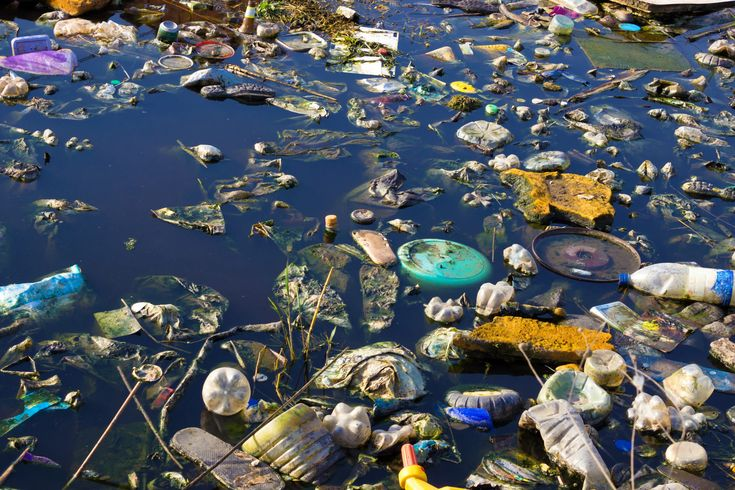

Já ouviu falar da história da Cólera?
A Cólera tem suas raízes na região do subcontinente indiano, onde a bactéria Víbrio Cholerae é endêmica. Acredita-se que a doença tenha surgido pela primeira vez em áreas próximas ao rio Ganges, que é sagrado para muitos hindus e também uma fonte de água para milhões de pessoas. As condições de saneamento precárias e a contaminação da água potável contribuiram para o surgimento da cólera

Ainda tem mais...!!
A cólera se espalhou pelo mundo em várias pandemias ao longo da história:
1ª Pandemia (1817-1824): A primeira pandemia da cólera começou na Índia e se espalhou rapidamente para países vizinhos, incluindo o Sudoeste Asiático, Oriente Médio e partes da Europa. Ela resultou em milhares de mortes.
2ª Pandemia (1829-1851): A segunda pandemia é considerada a mais mortal, atingindo a Europa Ocidental e causando surtos significativos em cidades como Londres e Paris. Esse surto levou à implementação de medidas de sasúde pública.
3ª Pandemia (1852-1860): Esta pandemia teve seu epicentro na Índia novamente, mas se espalhou para a Europa e América do Norte. Foi durante essa fase que os cientistas começaram a entender melhor a transmissão da doença.
4ª Pandemia (1863-1875): A quarta pandemia teve impactos significativos na Europam especialmente na Rússia e nos Balcãs. Essa fase também coincidiu com um aumento na pesquisa sobre as causas da cólera.
5ª Pandemia (1881-1896): Durante essa pandemiam surtos ocorreram em várias partes do mundo, incluindo os Estados Unidos e o Japão. Foi durante esse períudo que o médico germânico Robert Koch isolou a bactéria causadora da cólera em 1883, proporcionando uma compreensão científica fundamental sobre a doença.
6ª Pandemia (1899-1923): Esta foi a última pandemia clássica de cóleram afetando principalmente áreas do Oriente Médio e partes da Ásia.,
Após as pandemias, surtos esporádicos de cólera continuaram a ocorrer em várias regiões do mundo, especialmente em várias áreas com infraestrutura sanitária deficiente. Em 1961, um novo sorotipo (Vibrio Cholerae O1 El Tor) emergiu e causou surtos significativos na Ásia, Europa e África.
Nos anos 2000, surtos de cólera foram registrados em lugares como Haiti após o terreno de 2010, onde a falta de acesso levou a água potável e saneamento adequado levou ao surgimento de uma grave epidemia.
Concluindo...
A história da cólera é marcada por sua capacidade de causar grandes surtos e pandemias devido a sua transmissão através da água contaminada e alimentos. O entendimento científico sobre a doença evoluiu ao longo do tempo, levando à implementação de medidas de saúde pública que ajudaram a controlar sua propagação.
